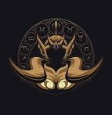

Selecione um personagem
- 
Mu de Áries
Cavaleiro de Ouro que protege a Casa de Áries. Hábil na restauração de armaduras, é ele quem conserta as Armaduras de Bronze de Seiya e dos outros antes da batalha das Doze Casas do Zodíaco.
Cavaleiro de Ouro que protege a Casa de Áries. Hábil na restauração de armaduras, é ele quem conserta as Armaduras de Bronze de Seiya e dos outros antes da batalha das Doze Casas do Zodíaco.